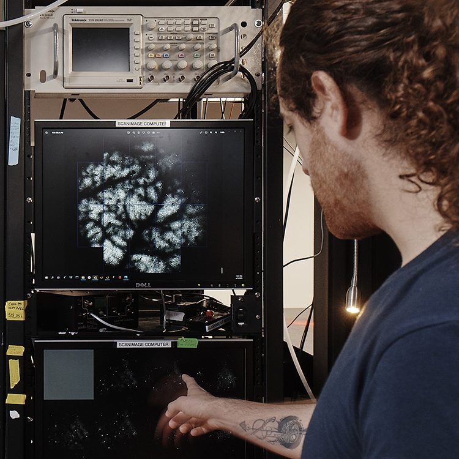

Integrated teams of biologists, AI researchers, tool builders, and theorists work together to pursue Janelia’s overarching mission and move biological discoveries forward across HHMI and in the larger scientific community.
Biology pursues the central scientific research questions at the heart of Janelia’s mission.

AI@HHMI powers this research, creating AI systems that help scientists analyze and understand their data and eventually design and run experiments as well.
Tools@HHMI enables this work, building the microscopes, molecular tools, and instruments that drive biological discovery.
Theory@HHMI guides these questions, developing conceptual frameworks that can be tested in the lab.
Janelia at a Glance
Established
2006
Location
30 Miles
From D.C.
Employees
+650
Staffs & Researchers
Campus
689
Acres
140,000
Mapped Neurons
5,000
Neurons Per Hour
Mission
HHMI’s Janelia Research Campus in Ashburn, Virginia, is undertaking an ambitious, decade-long challenge to understand how a complex brain generates behavior, and to develop a new mode of discovery in which biologists and AI work together to drive science forward. Seizing the moment requires exactly what Janelia was built to provide: sustained support, shared infrastructure, interdisciplinary teams, and the time to ask the hard questions.
Journey
After centuries of investigation, scientists still cannot explain how the brain integrates sensory information, internal states, memories, and physiology to produce behaviors. Understanding the fundamental function of the brain is vital not only in its own right, but as the key to making real progress against brain disorders, like Alzheimer’s disease and depression, that impact hundreds of millions of people worldwide. Janelia’s grand challenge is to build a mechanistic account connecting molecules, neural circuits, brain activity, and complex behavior in a whole animal in motion.
Two forces have converged to bring what was previously impossible within reach: a new generation of tools that lets us observe whole biological systems with a completeness that wasn’t possible a decade ago, and AI capable of parsing data at scales no human scientist can manage. The identification of a new experimental model, Danionella — a small fish that stays transparent into adulthood — also now gives researchers a way to see the whole brain at work.
Seizing the moment requires exactly what Janelia was built to provide: sustained support, shared infrastructure, interdisciplinary teams, and the time to ask the hard questions.
Janelia’s three lead scientist roles
Janelia’s ambitious mission needs scientists who work in different ways.
Principal Scientist
Develop approaches and contribute deep expertise to shared questions.
A distinct career centered on direct scientific contribution.
Contribute intellectual leadership across projects and disciplines.